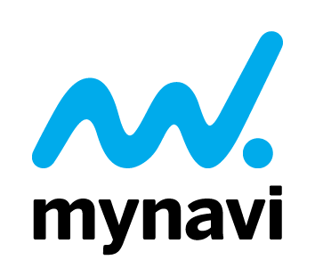

01
Shape the criteria
Help define what a strong workforce-learning venture looks like, and turn that into a clear, fair rubric.
Jury Charter 2026 cycle
An invitation to join the jury of the GESA Workforce Learning Track — the nonprofit awards program, run by MindCET and Sharptext, that recognizes the startups closing the skills gap.
8,000+ startups · 130+ countries · since 2014. Run by MindCET & Sharptext, under the Global EdTech Startup Awards.


A clear, finite set of tasks across a single cycle — you take part in the ones that fit.
01
Help define what a strong workforce-learning venture looks like, and turn that into a clear, fair rubric.
02
Review and score shortlisted entries against the rubric, focusing on your areas of expertise.
03
Take a closer, more considered look at the shortlist before winners are chosen.
04
Share your perspective with a winning team — mentorship on your terms, where it’s useful.
05
Take part in optional sessions with finalists, sharing practical know-how.
The panel is curated by the Track Curator, who safeguards the criteria and the integrity of the process.

Curated by
Track Curator, GESA Workforce Learning Track · founder of Sharptext. Lucian curates the panel, safeguards the criteria, and keeps the process independent — so the award reflects the field, not any single interest.
The jury is built to reflect the whole market, not a single corner of it — seasoned voices from across the workforce-learning ecosystem. The panel is kept deliberately small and balanced across these five backgrounds, so seats in each are limited.
On integrity
Jurors recuse themselves from any applicant they’re connected to. Investor and platform voices join where they don’t compete with the ventures under review, and the jury is a forum for judgment — not a channel for deal access. The Curator safeguards the rubric so the result reflects the field.
The 2026 panel
Being confirmed now — the profiles below are illustrative of the voices we’re assembling.

Global Digital Education Thought Leader
Among Latin America’s most influential edtech leaders; named EdTech Digest’s global visionary of the year, 2022.
LinkedIn
Entrepreneur & Investor · Tyton Partners
Impact investor and social entrepreneur; Director at Tyton Partners, previously with the XPRIZE Foundation.
LinkedInYour time is the most important resource. Every role is opt-in and adapts to your constraints — lend your name, or go all the way through to mentoring. Mix and adjust at any point in the cycle.
The criteria are written first, in summer 2026. Jurors who join now help shape the rubric the rest of the field is judged against — those who join later evaluate within it.
About 1 hour
Join the named panel and approve the final selection criteria. Your name and organization appear alongside the other jurors.
4–6 hours
Score a round of shortlisted applicants against the shared rubric, in your areas of expertise.
6–10 hours
Co-create the evaluation rubric and selection criteria, and help vet the finalists.
Variable · optional travel
Mentor a winner, join the London bootcamp, and attend the BETT finals.
Times are indicative, per cycle, for that activity alone — combine levels as you like. Everything is opt-in; there are no obligations beyond the level you choose. Final timings are confirmed against the GESA 2026 calendar.
Summer 2026
Criteria and rubric shaped with the jury.
Shape
Autumn 2026
Applicants reviewed; a shortlist is scored.
Evaluate
Late 2026
Finalists vetted and selected; semifinal visibility around OEB Berlin.
Vet
BETT London, early 2027
Finalist showcase; winners announced.
Attend
Post-finals
Winners engage with mentors and an optional bootcamp.
Mentor
Summer 2026
Criteria and rubric shaped with the jury. Shape
Autumn 2026
Applicants reviewed; a shortlist is scored. Evaluate
Late 2026
Finalists vetted and selected; semifinal visibility around OEB Berlin. Vet
BETT London, early 2027
Finalist showcase; winners announced. Attend
Post-finals
Winners engage with mentors and an optional bootcamp. Mentor
Dates follow the GESAwards 2026 cycle and the Bett finals calendar; exact timings to be confirmed.
Recognition
A seat on a global, nonprofit awards program — your name and organization on track materials, in line with your level of involvement.
Field insight
A structured read on where workforce learning is heading, drawn from the full applicant pool — the field, not a deal list.
The room
A place alongside a deliberately cross-sector panel — employers, investors, platforms, analysts, and funders.
Association
Standing with a credible, additive program built around lifelong learning and the skills gap.
We’re assembling the 2026 panel now. The invitation is for the 2026 cycle, renewable by mutual agreement — a clean way to begin, with an open door to continue. Everything is opt-in; there are no obligations beyond the level you choose.
Prefer email? Reply to Lucian Cosinschi (Sharptext, Track Curator) — gesa.jury@sharptext.org